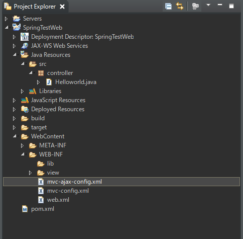
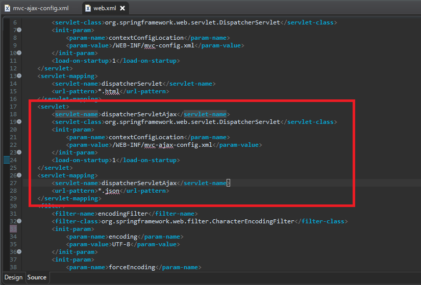
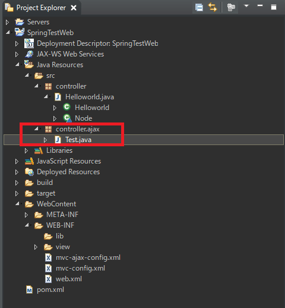
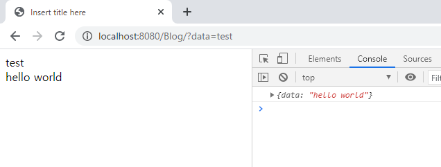
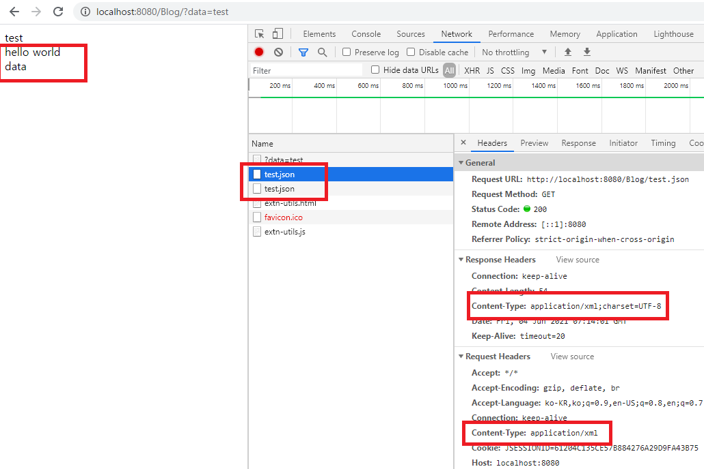

[Java] 41. Web Spring webframeworkのControllerからajaxの要請する時、jsonタイプのデータを返却する方法
こんにちは。明月です。
この投稿はWeb Spring webframeworkのControllerからajaxの要請する時、jsonタイプのデータを返却する方法に関する説明です。
以前の投稿でWeb Spring frameworkのControllerを扱う方法に関して説明しました。
link - [Java] 40. Web Spring frameworkでControllerを扱う方法
Controllerとはウェブブラウザから要請すると実行する関数を探して実行します。その後、ウェブブラウザに応答する役割までします。
しかし、ここでControllerメソッドは基本的にString値をリターンすることになっています。このStringタイプはviewファイル名を探すために作成することになっています。
でも、我々がajaxでウェブページのhtmlのデータを受け取る場合もありますが、普通はjsonタイプでデータを受け取る方法が普通ですね。
そうしたら、viewのhtmlファイルをマッピングすればだめですね。逆にリターン値でデータ値を格納して受け取る必要があります。サーブレットみたいですね。
リターン値をnullや文字がないStringタイプでリターンしてパラメータのHttpServletResponseのgetWriterの関数は使うことはどうでしょう。可能です。
でも、そうことにしたらSpring frameworkでサーブレット文法を使う気がしますね。
それならもっとSpringらしいな作成する方法に関して説明します。
以前私がSpring環境を設定する時、mvc-config.xmlで設定していることに説明したことがあります。
link - [Java] 39. Spring Web Frameworkを利用してウェブサービスプロジェクトを作成する方法
ここでajaxのための設定を追加しましょう。
先にmvc-ajax-config.xmlを追加します。

<?xml version="1.0" encoding="UTF-8"?>
<beans xmlns="http://www.springframework.org/schema/beans"
xmlns:xsi="http://www.w3.org/2001/XMLSchema-instance"
xmlns:mvc="http://www.springframework.org/schema/mvc"
xmlns:context="http://www.springframework.org/schema/context"
xsi:schemaLocation="http://www.springframework.org/schema/mvc
http://www.springframework.org/schema/mvc/spring-mvc.xsd
http://www.springframework.org/schema/beans
http://www.springframework.org/schema/beans/spring-beans.xsd
http://www.springframework.org/schema/context
http://www.springframework.org/schema/context/spring-context.xsd">
<!-- コントローラーパッケージ設定 -->
<context:component-scan base-package="controller.ajax" />
<!-- ウェブブラウザで応答するデータタイプ - UTF-8 -->
<mvc:annotation-driven>
<mvc:message-converters>
<bean class="org.springframework.http.converter.StringHttpMessageConverter">
<property name="supportedMediaTypes">
<list>
<!-- jsonタイプに返却するので設定 -->
<value>application/json;charset=UTF-8</value>
</list>
</property>
</bean>
</mvc:message-converters>
</mvc:annotation-driven>
<!-- view フォルダ設定 -->
<!-- ajaxの場合はviewファイルが必要ないので値を空にする。 -->
<bean class="org.springframework.web.servlet.view.InternalResourceViewResolver">
<property name="prefix" value="" />
<property name="suffix" value="" />
</bean>
</beans>
上のxml設定ファイルをweb.xmlに設定しましょう。
<servlet>
<servlet-name>dispatcherServletAjax</servlet-name>
<servlet-class>org.springframework.web.servlet.DispatcherServlet</servlet-class>
<init-param>
<param-name>contextConfigLocation</param-name>
<param-value>/WEB-INF/mvc-ajax-config.xml</param-value>
</init-param>
<load-on-startup>1</load-on-startup>
</servlet>
<servlet-mapping>
<servlet-name>dispatcherServletAjax</servlet-name>
<url-pattern>*.json</url-pattern>
</servlet-mapping>

以前のコントローラーパッケージはcontrollerだったですが、ajaxコントローラーパッケージはcontroller.ajaxです。
contoller.ajaxパッケージ中でクラスを生成します。

package controller.ajax;
import javax.servlet.http.HttpServletRequest;
import javax.servlet.http.HttpServletResponse;
import javax.servlet.http.HttpSession;
import org.springframework.stereotype.Controller;
import org.springframework.web.bind.annotation.RequestMapping;
import org.springframework.web.bind.annotation.RequestMethod;
import org.springframework.web.bind.annotation.ResponseBody;
// コントロールを設定するアトリビュート
@Controller
public class Test {
// クラスから分けた下記のアドレスを探索する。
// この例には/test.jsonのGET方式で呼び出す。
@RequestMapping(value = "test.json", method = RequestMethod.GET)
// @ResponseBodyを使うとviewファイルを探索することではなくリターン値が応答する。
@ResponseBody
// このマッピング関数はviewとマッピングすることではないので、ModelMapパラメータは必要ない。
public String index(HttpSession session, HttpServletRequest req, HttpServletResponse res) {
// jsonのStringタイプをリターンする。
return "{\"data\":\"hello world\"}";
}
}
ここのポイントは@ResponseBodyのアトリビュートです。@ResponseBodyを設定するとviewを探索しなく、返却値を応答します。
以前のindex.jspを少し修正して確認しましょう。
<%@ page language="java" contentType="text/html; charset=UTF-8" pageEncoding="UTF-8"%>
<!DOCTYPE html>
<html>
<head>
<meta charset="UTF-8">
<title>Insert title here</title>
</head>
<body>
<!-- controllerからModelMapで表示されるデータ -->
${Data}
<!-- ajaxの値を表示するdivタグ -->
<div id="result"></div>
<script>
// ブラウザローディングが終わると発生するイベント
window.onload = function() {
// 非同期XMLHttpRequestオブジェクト生成
var xhr = new XMLHttpRequest();
// 状態が変わる時のイベント
xhr.onreadystatechange = function() {
// 受信が完了すれば
if (xhr.readyState === XMLHttpRequest.DONE && xhr.status === 200) {
// 結果をStringからjavascriptタイプの構造体に変換
var result = JSON.parse(xhr.response);
// resultタグに表示
document.querySelector("#result").innerHTML = result.data;
}
}
// url設定GET方式で非同期(async)処理
xhr.open("GET", "test.json", true);
// 送信
xhr.send();
}
</script>
</body>
</html>

上の結果をみればtest.jsonで要請して、jsonデータを受信してブラウザに処理した結果を表示します。
我々が非同期ajaxで必ずjsonタイプを受け取ることではありません。xmlタイプで受け取ることもあるし、byteデータやbase64タイプで受け取る時もあります。
しかし、上の設定のmvc-ajax-config.xmlでContext-Typeをapplication/jsonに設定してしまいました。
そうするとxmlで設定したので他のタイプは別の設定をして設定することしかないかと思いますね。
基本的に我々は呼び出す関数の返却タイプはStringタイプに設定しました。
それをみると我々はStringタイプではなく、byte[]タイプに返却する時もあるし、Context-Typeによってjsonタイプではなく、octet-streamタイプやxmlタイプにも返却することもあります。
こんな設定をResponseEntityクラスを利用して返却タイプを設定することができます。
package controller.ajax;
import javax.servlet.http.HttpServletRequest;
import javax.servlet.http.HttpServletResponse;
import javax.servlet.http.HttpSession;
import org.springframework.http.HttpHeaders;
import org.springframework.http.HttpStatus;
import org.springframework.http.MediaType;
import org.springframework.http.ResponseEntity;
import org.springframework.stereotype.Controller;
import org.springframework.web.bind.annotation.RequestMapping;
import org.springframework.web.bind.annotation.RequestMethod;
import org.springframework.web.bind.annotation.ResponseBody;
// コントロールを設定するアトリビュート
@Controller
public class Test {
// クラスから分けた下記のアドレスを探索する。
// この例には/test.jsonのGET方式で呼び出す。
// producesの区分で呼び出す関数を区分する。
@RequestMapping(value = "test.json", method = RequestMethod.GET, produces = {"application/JSON"})
// @ResponseBodyを使うとviewファイルを探索することではなくリターン値が応答する。
@ResponseBody
public String index(HttpSession session, HttpServletRequest req, HttpServletResponse res) {
// jsonのStringタイプをリターンする。
return "{\"data\":\"hello world\"}";
}
// クラスから分けた下記のアドレスを探索する。
// この例には/test.jsonのGET方式で呼び出す。
// producesの区分で呼び出す関数を区分する。
@RequestMapping(value = "test.json", method = RequestMethod.GET, consumes = {"application/XML"})
// @ResponseBodyを使うとviewファイルを探索することではなくリターン値が応答する。
@ResponseBody
public ResponseEntity<String> index1(HttpSession session, HttpServletRequest req, HttpServletResponse res) {
// 応答ヘッダーを設定するためのインスタンスを生成
HttpHeaders header = new HttpHeaders();
// ContentTypeをapplication/XMLで設定
header.setContentType(MediaType.APPLICATION_XML);
// ResponseEntityクラスでリターン
return new ResponseEntity<String>("<?xml version=\"1.0\" encoding=\"UTF-8\"?><data>xml</data>", header, HttpStatus.OK);
}
}
<%@ page language="java" contentType="text/html; charset=UTF-8" pageEncoding="UTF-8"%>
<!DOCTYPE html>
<html>
<head>
<meta charset="UTF-8">
<title>Insert title here</title>
</head>
<body>
<!-- controllerからModelMapで表示されるデータ -->
${Data}
<!-- ajaxの値を表示するdivタグ -->
<div id="result"></div>
<!-- xmlの値を表示するdivタグ -->
<div id="result1"></div>
<script>
// ajaxを使うための関数
function ajax(obj) {
// 非同期XMLHttpRequestオブジェクト生成
let xhr = new XMLHttpRequest();
// 状態が変わる時のイベント
xhr.onreadystatechange = function() {
// 受信が完了すれば
if (xhr.readyState === XMLHttpRequest.DONE && xhr.status === 200) {
// callback関数を呼び出す。
obj.done.call(this, xhr);
}
}
// url設定GET方式で非同期(async)処理
xhr.open("GET", obj.url, true);
// 要請Content-Type設定
xhr.setRequestHeader("Content-Type", obj.type);
// 送信
xhr.send();
}
// ブラウザローディングが終わると発生するイベント
window.onload = function() {
// ajax関数を呼び出す。
ajax({
url : "test.json", // url
type : "application/json", // contentType設定
done : function(res) { // 要請が完了すれば
// 結果をStringからjavascriptタイプの構造体に変換
let result = JSON.parse(res.response);
// resultタグに表示
document.querySelector("#result").innerHTML = result.data;
}
});
// ajax関数を呼び出す。
ajax({
url : "test.json", // url
type : "application/xml", // contentType設定
done : function(res) {
// 結果をxml構造体に変換
let result = res.responseXML;
// result1タグに表示
document.querySelector("#result1").innerHTML = result.getElementsByTagName("data")[0].nodeName;
}
});
}
</script>
</body>
</html>

結果はtest.jsonを二回に要請しました。
その中で一つはapplication/xmlタイプに要請して、応答もapplication/xmlタイプで受け取りました。当然、結果もxmlタイプに受け取りましたのでdataの結果が画面に表示されます。
ここまでWeb Spring webframeworkのControllerからajaxの要請する時、jsonタイプのデータを返却する方法に関する説明でした。
ご不明なところや間違いところがあればコメントしてください。
- [Java] 48. JPAでQueryを使う方法(JPQLクエリを作成する方法)2019/10/13 22:55:52
- [Java] 47. JPAのEntityクラスのリファレンス設定(cascade, fetch)2019/10/13 00:40:08
- [Java] 46. JPAのEntityクラスの基本設定(@GeneratedValue、 @ManyToMany)2019/10/11 07:30:14
- [Java] 45. JPAを設定する方法2019/10/10 07:29:43
- [Java] 44. Web Spring frameworkのviewで使うプログラム言語(JSTL) - XML2019/10/09 07:34:08
- [Java] 43. Web Spring frameworkのviewで使うプログラム言語(JSTL) - 関数、データベース2019/10/08 07:43:33
- [Java] 42. Web Spring frameworkのviewで使うプログラム言語(JSTL) - コア―、フォーマット2019/10/07 07:38:13
- [Java] 41. Web Spring webframeworkのControllerからajaxの要請する時、jsonタイプのデータを返却する方法2019/10/04 19:24:43
- [Java] 40. Web Spring frameworkでControllerを扱う方法2019/10/03 20:02:06
- [Java] 39. Spring Web Frameworkを利用してウェブサービスプロジェクトを作成する方法2019/10/02 21:00:22
- [Java] 38. Javaでウェブサービスプロジェクト(JSP Servlet)を作成する方法2019/10/01 21:48:08
- [Java] 37.イクリプス(eclipse)でトムキャット(tomcat)を設定する方法2019/09/30 22:19:34
- [Java] 36.コーディングする時、よく使うコーディングパターンとステップ数を減らす方法2019/09/27 20:39:09
- [Java] 35. コーディング規約設定(Google Standard coding style)2019/09/26 21:31:25
- [Java] 34. WindowでMariaDBをインストールする方法2019/09/25 19:58:30
- [Java] 56. Web serviceのサーブレット(Servlet)で初期化作業(properties設定)2021/07/02 17:10:36
- [Java] 55. Spring frameworkに文字化けを解決する方法(Encoding設定)2021/06/30 16:37:16
- [Java] 54. Spring frameworkでWeb filterを使う方法2021/06/29 18:25:12
- [Java] 53. ウェブサービス(Web service)でエラーページを処理する方法2021/06/25 13:35:54
- [Design pattern] 1-3. ファクトリメソッドパターン(Factory method pattern)2021/06/23 19:45:37
- [Java] WebSocketでチャット履歴をローディングする方法2021/06/15 18:34:45
- [Java] WebSocketを利用してユーザ(サイト運用者)が他のユーザとチャットする方法2021/06/15 17:20:08
- [Design pattern] 1-2. ビルダーパターン(Builder pattern)2021/06/11 19:06:28
- [Design pattern] 1-1. シングルトンパターン(Singleton pattern)2021/06/09 19:40:05
- [Design Pattern] デザインパターンの紹介2021/06/08 20:42:36
- [Tools] Dbeaver(無料Sql queryブラウザツール)2021/04/28 18:26:49
- [Bootstrap] HTMLデザインのフレームワークのBootstrap紹介2020/07/30 19:06:36
- [Python] メール(smtplib)を送信する方法2020/07/27 18:38:43
- [Python] HttpConnection(requestsモジュール)でウェブサーバーで接続する方法2020/07/20 14:41:51
- [Python] Excel(openpyxl)を扱う方法2020/07/16 16:40:31